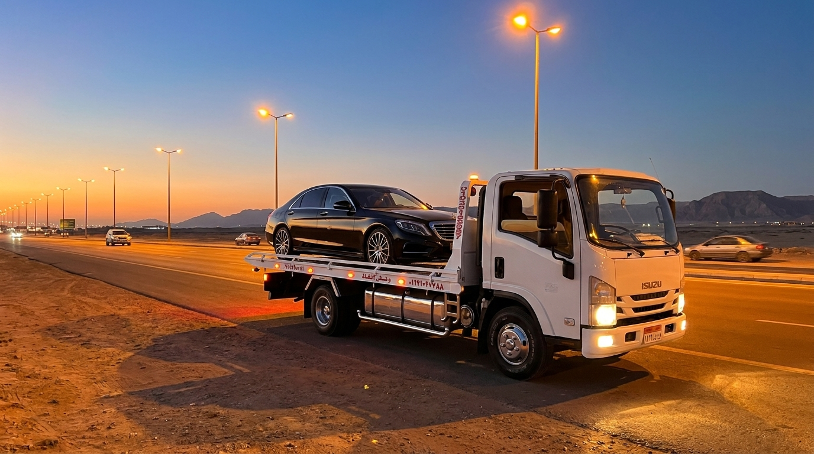
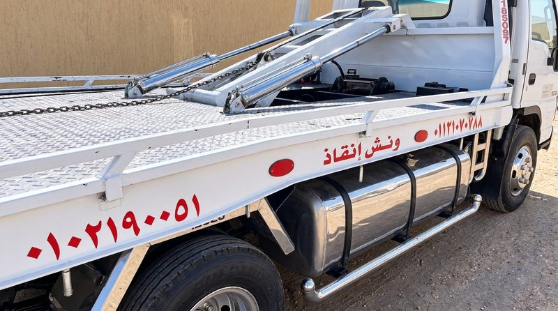
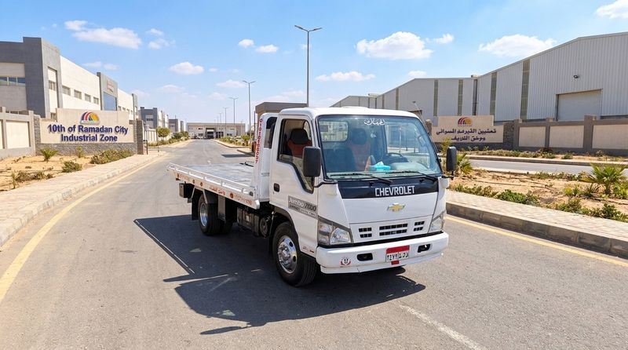
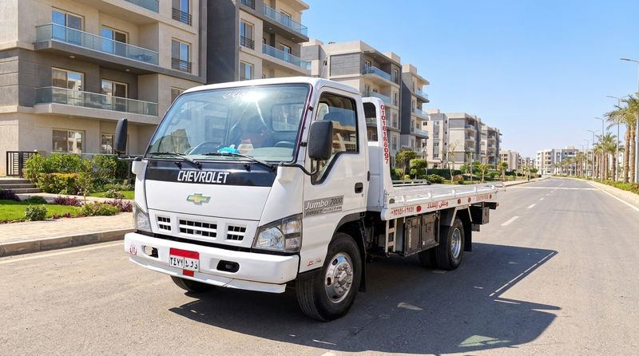

ونش إنقاذ وسحب سيارات 24 ساعة على كافة الطرق والمحاور
عربيتك عطلانة أو محتاج سطحة هيدروليك لنقلها بأمان؟ ونش الحربي يوفر لك أسرع خدمة إنقاذ وسحب لجميع أنواع المركبات (الملاكي، الفارهة، الدفع الرباعي، والنقل الخفيف) بأعلى معايير الأمان وبدون أي خدوش على مدار الـ 24 ساعة، انطلاقاً من المركز الرئيسي بمدينة الشروق مع تغطية ميدانية متساوية وفورية لمدن العبور، العاصمة الإدارية الجديدة، العاشر من رمضان، مدينتي، بدر، المستقبل، ومحاور السويس والإسماعيلية.

فيديوهات واقعية لعمليات سحب ونقل سيارات ونش الحربي
نوثق عمليات الإنقاذ والسحب الميداني لنبرهن لعملائنا مستوى الاحترافية والدقة في حماية هيكل السيارة ونظام التعليق.
سحب سيارة معطلة بسطحة هيدروليكية دون ملامسة الصدام
توثيق عملية رفع وتثبيت سيارة ملاكي باحترافية كاملة باستخدام الستربس المعتمد على السطحة الهيدروليكية لحماية المقصات والدهان.
تحرك فوري لنجدة سيارة على طريق الإسماعيلية الصحراوي
فريق ونش الحربي أثناء تأمين ونقل سيارة تعرضت لعطل مفاجئ على جانب الطريق السريع ونقلها لمركز الصيانة بسلامة تامة.
خدمات سحب وإنقاذ تلبي كافة متطلبات الطوارئ
نوفر حلولاً مخصصة تناسب نوع سيارتك وحالتها لضمان تجربة سحب آمنة وسريعة على مدار 24 ساعة.
سطحة هيدروليكية كاملة النزول
مثالية للسيارات الفارهة والمهبطة والرياضية (مرسيدس، بي إم دبليو، بورش). تنزل الصينية مستوية تماماً على الأرض لمنع احتكاك الأكصدامات والشاسية.
- زاوية صعود فائقة النعومة للسيارات المنخفضة
- تثبيت العجلات بأحزمة نايلون مقواة لا تخدش الجنوط
إنقاذ سيارات الملاكي والسيدان
سحب آمن لجميع سيارات الملاكي في حالات أعطال المحرك، الفتيس، السخونة، أو انقطاع السيور في شوارع المدن والمحاور المحيطة.
- تعامل خبير مع الفتيس الأوتوماتيك والمانيوال
- سحب لطيف مع إمكانية مرافقة السائق بكابينة الونش
إنقاذ الحوادث والتصادم
جاهزية قصوى للتعامل مع حوادث الطرق السريعة وتأمين مسار المرور، بفضل أجهزة شد وسحب متطورة قادرة على انتشال السيارات من المنحدرات.
- إضاءات تحذيرية ومثلثات أمان لتأمين الموقع
- وايرات سحب فولاذية للانتشال من الرمال والمنحدرات
سحب سيارات الدفع الرباعي 4x4 والـ SUV
أوناش وسطحات قادرة على حمل الأوزان الكبيرة لسيارات الدفع الرباعي دون تحميل شاق على الدفرنس أو ناقل الحركة المستمر AWD.
- تحميل كامل للسيارة فوق السطحة لحماية أنظمة الدفع
- نقاط تثبيت قوية تتحمل الأوزان الثقيلة
خدمات النقل الخفيف وميكروباصات الشركات
نخدم المصانع والشركات بالشروق والعبور والعاشر وبدر بنقل شاحنات الجامبو، وسيارات النقل الخفيف، وميكروباصات نقل العمال لضمان استمرار العمل.
- أوناش مخصصة للحمولات الصناعية الخفيفة
- فواتير معتمدة وسرعة تحرك للشركات والمصانع
إنقاذ غرز الرمال على الطرق الصحراوية
طرق الإسماعيلية والسويس محاطة بمسارات رملية؛ نملك وايرات سحب طويلة ومعدات متخصصة لإخراج السيارات الغارزة بأمان ودون تلف.
- وايرات جر متينة تمتد لمسافات طويلة
- إعادة السيارة إلى الطريق الأسفلتي بسلام
محاور التغطية السريعة والتمركز المباشر
المركز الرئيسي بمدينة الشروق مع انتشار ميداني متساوٍ يغطي 8 مدن ومحاور استراتيجية رئيسية بشرق القاهرة ومدن القناة.
1. مدينة الشروق ومداخلها (المركز الرئيسي)
تأمين مداخل الشروق 1 و2 على طريق الإسماعيلية، ومداخل الشروق من طريق السويس، وطريق الشباب، والأحياء السكنية والجامعات للملاكي والسيارات الفارهة.
2. مدينة العبور ومحاورها
تغطية لكافة أحياء العبور السكنية (الشباب، الغولف، الحي الأول للتاسع)، المناطق الصناعية (أ، ب، ج)، طريق خط 10، محور بلبيس، وسوق العبور.
3. العاصمة الإدارية الجديدة
تغطية الحي الحكومي، حي المال والأعمال، منطقة الأعمال المركزية CBD، الأحياء السكنية (R3, R5, R7)، ومحاور محمد بن زايد والأوسطي والإقليمي.
4. مدينة العاشر من رمضان
تغطية فورية لجميع المناطق الصناعية (A1، A2، A3، A4، والمطورين)، ومنطقة الـ 6 ملايين، والأحياء السكنية (صيدناوي، الأردنية، والمجاورات) ومداخل بلبيس والروبيكي.
5. مدينتي وبواباتها ومحور الأمل
خدمة خاصة لسكان مدينتي وزوارها عبر بوابات طريق السويس وبوابات محور الأمل، وتوفير سطحات خاصة للسيارات الفارهة ونقلها للتوكيلات ومراكز الخدمة.
6. مدينة المستقبل وبدر
تغطية بوابات ومداخل مساكن ضباط المستقبل، مدينة المستقبل سيتي، ومدينة بدر والمناطق الصناعية ومحطة القطار الخفيف LRT.
7. طريق الإسماعيلية الصحراوي
تغطية شاملة من محطة تحصيل رسوم الإسماعيلية والمركز الطبي العالمي، ومخارج الشروق والعبور، وحتى الكيلو 86 ومداخل مدينة العاشر من رمضان.
8. طريق السويس والدائري الإقليمي
تأمين المسار السريع لطريق السويس وشبكة الدائري الإقليمي والأوسطي من كوبري الأوسطي ومدينتي والعاصمة وحتى كارتة السويس وبدر.
أوناش وسطحات ونش الحربي المجهزة في الميدان
نعتمد على شاحنات وسيارات ونش حديثة تخضع لصيانة دورية لضمان أعلى درجات الاعتمادية أثناء إنقاذ سيارتك.

سطحة هيدروليكية كاملة النزول
مخصصة لنقل السيارات الملاكي والرياضية والفارهة بدون أي ملامسة أو احتكاك مع الأرض أثناء السحب والتثبيت بأحدث ستربس الأمان.
حجز السطحة الهيدروليك
ونش استعادة وسحب المصانع والشركات
جاهزية مستمرة لسحب ومناورة المركبات داخل المناطق الصناعية ومستودعات الشروق والعاشر والعبور لخدمة الشركات والمصانع على مدار 24 ساعة.
طلب ونش المصانع
ونش طوارئ وسحب المدن والمحاور
استجابة سريعة لتأمين ونقل السيارات المتعطلة بالشروق، العبور، العاصمة الإدارية، مدينتي، بدر، ومحاور طريقي السويس والإسماعيلية.
طلب ونش المحاورتحتاج ونش الآن في المدن الجديدة أو المحاور السريعة؟
المركز الرئيسي بمدينة الشروق وأسطولنا الميداني موزع بتساوٍ على كافة المحاور؛ اتصل بنا مباشرة أو راسلنا عبر واتساب لإرسال اللوكيشن، أو املأ بيانات العطل وسيتواصل معك أقرب سائق سطحة في محيطك فوراً:
إجابات أهم استفسارات العملاء حول خدمات الونش
كل ما يهمك معرفته حول سرعة الاستجابة، سلامة التحميل، وطرق التسعير العادل.
كم من الوقت يستغرق وصول ونش الحربي لموقعي؟
بفضل انتشار وتمركز سطحاتنا على المحاور السريعة وفي مدينة الشروق والمدن المجاورة، يتراوح متوسط زمن الوصول الفعلي بين 15 إلى 25 دقيقة فقط حسب موقعك الدقيق على الطريق.
هل السطحة الهيدروليكية آمنة للسيارات الرياضية الفارهة؟
نعم تماماً، السطحة الهيدروليكية مصممة خصيصاً لتنزل بالكامل حتى مستوى الأرض بزاوية صعود شبه معدومة، مع تثبيت العجلات بأحزمة قماشية مقواة تحمي الجنوط والشاسية من أي خدش أو احتكاك.
كيف يتم تسعير خدمة النقل والسحب؟
السعر يُحدد بوضوح وشفافية عبر الهاتف قبل التحرك بناءً على نوع المركبة والمسافة بالكيلومتر وحالة العطل، وهو سعر نهائي وثابت تماماً بدون إكراميات.
ما هي المناطق والمدن التي تغطونها؟
المركز الرئيسي في مدينة الشروق، ونغطي بشبكة متساوية وسريعة: مدينة الشروق، مدينة العبور، العاصمة الإدارية الجديدة، مدينة العاشر من رمضان (المناطق الصناعية والأحياء)، مدينتي، مدينة المستقبل وبدر، وطريقي الإسماعيلية والسويس الصحراوي وشبكة الدائري الإقليمي والأوسطي.